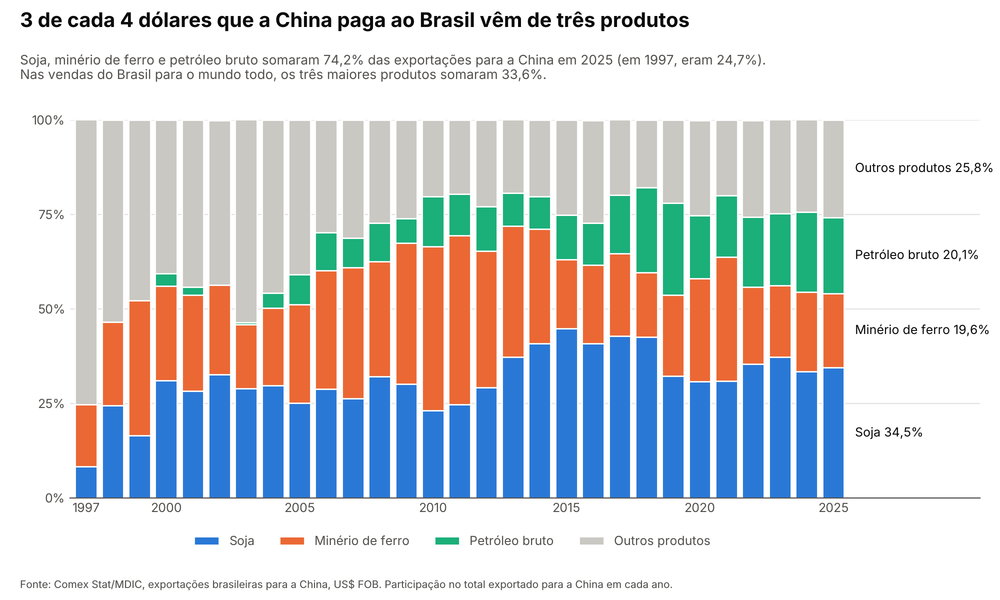

rotzOn #2: versão para o Substack
Gerado a partir de edicao-02/newsletter.md. Se mudar o texto, rode de novo rotzon/substack.py.
- No Substack: New post. Cole o título e o subtítulo nos campos próprios.
- No início do corpo, insira a imagem (botão de imagem → suba
visuais/china_pauta_trio.png). Cole a legenda no campo de legenda e o texto alternativo em "Alt text". - Logo abaixo da imagem, cole o corpo. Intertítulos, negritos, citação e links vêm junto.
- Mande um e-mail de teste para você (Send test email) e confira no celular antes de agendar.
visuais/china_pauta_trio.png
O que está acontecendo
A China é a maior compradora do Brasil desde 2009, quando passou os Estados Unidos. Em 2025, ela levou US$ 99,9 bilhões em produtos brasileiros, ou 28,7% de tudo o que o país exportou. É mais de 2,5 vezes o que os EUA compraram (US$ 37,7 bilhões, 10,8%). Em 1997, a China era só a 12ª da lista.
O que chama atenção é o que ela compra. Na edição passada vimos que, em 2025, a China passou a vender mais adubo ao Brasil do que a Rússia, em toneladas. Agora, do outro lado da balança: só três produtos (soja, petróleo bruto e minério de ferro) somaram 74,2% do que o Brasil vendeu à China em 2025. A pauta exportadora, que é a lista de produtos que um país vende lá fora, é bem mais concentrada com a China do que com o mundo. Nas vendas brasileiras para todos os países, os três maiores produtos somaram 33,6%. Em 1997, o trio era 24,7% das vendas para a China. Desde 2006, nunca ficou abaixo de 68,8% (o pico foi 82,2%, em 2018).
A mistura entre os três mudou. Por volta de 2011, o minério dominava, com 44,7% do total. Depois a soja assumiu a liderança e hoje é 34,5%, enquanto o petróleo foi de quase nada para 20,1%. E 2026 reforça a concentração: de janeiro a outubro, o Brasil vendeu US$ 93,1 bilhões à China, US$ 8,5 bilhões a mais que no mesmo período de 2025. Desse aumento, US$ 7,9 bilhões vieram só do petróleo.
E a carne?
O "outros produtos" do gráfico parece parado em cerca de um quarto do total, mas em dólares ele quase triplicou: de US$ 8,8 bilhões em 2015 para US$ 25,8 bilhões em 2025. A maior responsável é a carne bovina congelada. Em 2015, o Brasil vendeu US$ 0,46 bilhão dela à China; em 2025, US$ 8,8 bilhões, 19 vezes mais. Hoje, de toda a carne bovina congelada que o Brasil exporta, 61% vai para a China. Em 2015 eram 12%.
Mas a carne mostra também o outro lado de depender de um comprador só. De janeiro a outubro de 2026, as vendas dela à China caíram 17,8%, de US$ 7,1 bilhões para US$ 5,8 bilhões. No mesmo período, a carne de frango subiu de US$ 0,5 bilhão para US$ 1,3 bilhão.
O que isso quer dizer pro Brasil
A relação com a China é grande, mas estreita. Em 2025, o Brasil vendeu 841 produtos diferentes para lá, e só 7 passaram de US$ 1 bilhão. E a dependência vale nos dois sentidos dentro de cada produto: a China levou 79% da soja que o Brasil exportou em 2025, 68% do minério de ferro e 45% do petróleo bruto. Ou seja, quando o preço da soja ou do minério muda, ou quando a China compra mais ou menos, uma fatia enorme das exportações brasileiras muda junto.
📌 Dado pra guardar
De cada 4 dólares que a China paga ao Brasil, 3 vêm de soja, minério de ferro e petróleo.
Fontes
- Exportações brasileiras: Comex Stat, Ministério do Desenvolvimento, Indústria, Comércio e Serviços (MDIC), dados abertos. Exportação, por país e por SH4 (código de 4 dígitos do Sistema Harmonizado, que agrupa produtos parecidos), em US$ FOB (valor no porto de embarque, sem frete nem seguro), de 1997 a out/2026 (carga de 06/11/2026). Soja = SH4 1201; minério de ferro = 2601; petróleo bruto = 2709; carne bovina congelada = 0202; carne de frango = 0207. comexstat.mdic.gov.br · API: api-comexstat.mdic.gov.br
Como foi feito: os dados foram baixados da API oficial do Comex Stat. O código está aberto e qualquer pessoa pode refazer tudo.